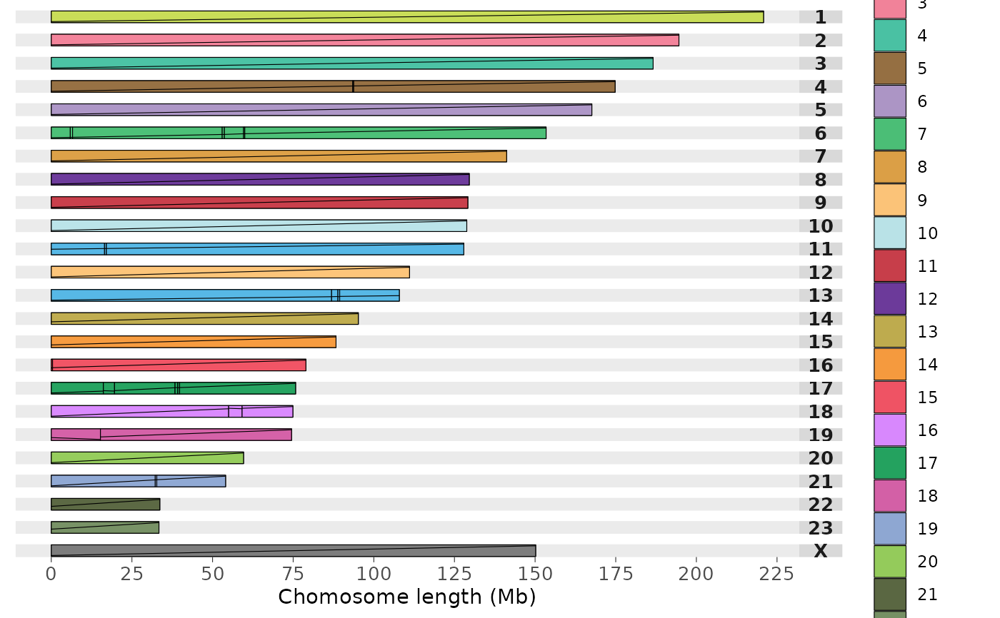

Draw synteny ideograms in Chromosome painting style
Usage
draw.ideogram(
file_data,
sizefile,
output,
directory = NULL,
fileformat = "png",
colours = colours.default,
w = 8.5,
h = 10,
ps = 5
)Arguments
- file_data
Path to the syntenic blocks file
- sizefile
Chromosome size file
- output
output file name
- directory
string containing file path to chosen directory to save image file
- fileformat
output file format specified using
fileformat = "pdf"(the default is "png")- colours
concatenated string of chromosome IDs and assigned colours if desired using the format
colours = c("1" = "red", "2" = "blue", "3" = "green","X" = "grey")if the no colours are assigned default values will be used- w
width of output image using
w = 8.5(default)- h
height of output image using
h = 10(default)- ps
point size of output image using
ps = 5(default)
Details
This function draws pairwise synteny plots in chromosome painting style.
Inputs are tab separated files;
It requires as input:
File containing the syntenic blocks following this format: reference chromosome, reference start position, reference end position, target chromosome, target start position, target end position, orient, reference species identifier, target species identifier
Tab separated file of all chromosome, scaffold, or contig lengths and the species identifier, in order from first target species in the alignment files followed by the first reference species in the alignment files -- top of file -- to the last target species and reference species in the alignment files -- end of file. in this format: chromosome ID, chromosome length, species identifier
The desired output file name
Please separate files by tab and ensure any species identifiers used between length and alignment files are matching (same identifiers and caseing)
There are optional parameters for some customization of this function:
The format for saving the image i.e. png or pdf can be altered by inputting:
fileformat = "pdf"(the default value is "png")The colour of the ideograms can be altered by inputting a concatenated string of chromosome IDs with assigned colour values which can be found with R colour Pallette e.g.
colours = c("1" = "red", "2" = "blue", "3" = "green","4" = "orange", "5" = "purple","X" = "grey")if no colours are assigned default values will be used but colours MUST be assigned to all chromosomesThe width of the image created can be changed by inputting:
w = 8.5(default)The height of the image created can be changed by inputting:
h = 10(default)The point size of the image created can be changed by inputting:
ps = 5(default)The directory where the image file should be saved, as default the image is saved to temporary directory, change by inputting:
directory = "path/to/directory"
Target is the species which chromosomes will be painted. Reference will be used for painting and diagonals. Chromosomes will be in the same order as in the target chromosomes in the chromosome length file
Example: draw.ideogram("example_alignment_1.txt", "example_lengths.txt", "outputname", directory = "path/to/directory", fileformat = "pdf")
Examples
# Create objects containing file paths to external dataset
# (see vignette to follow examples with personal data)
length.file <- system.file("extdata", "example_lengths.txt", package = "syntenyPlotteR")
file1 <- system.file("extdata", "example_alignment_1.txt", package = "syntenyPlotteR")
# -----------------------------------------------------------------------------------
# Run draw.ideogram function
# To run example and save file to working directory
# add directory parameter and set working directory
# To run example with personal data see vignette
draw.ideogram(file1, length.file, "outputName", fileformat = "pdf")
#> Saving ideogram image to /tmp/Rtmpv2IbI3
